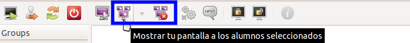
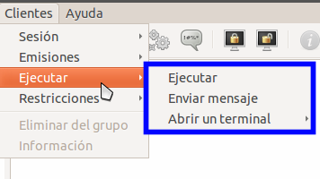
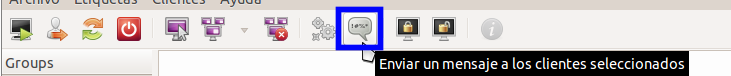
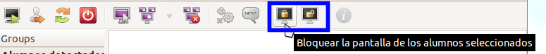
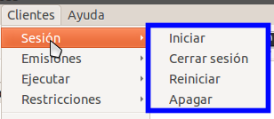
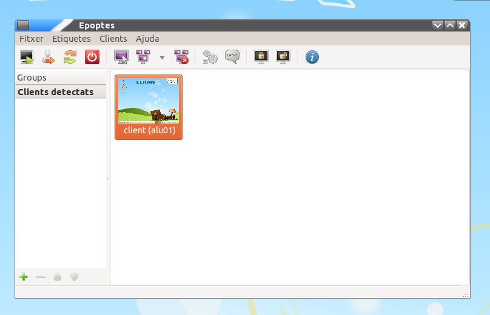

A partir de LliureX Pandora 13.06, la gestión del aula se realiza con Epoptes (en versiones anteriores se empleaba TCOSMonitor). Esta aplicación permite realizar una serie acciones a uno o varios equipos cliente seleccionados, a saber:
Epoptes se accede desde el menú: Aplicaciones > Administración de Lliurex > Epoptes, control de aula. Puede seleccionar el conjunto de equipos a controlar desde la interfaz de Epoptes.
Si no dispone de proyector en el aula o simplemente quiere mostrar cómo se realiza alguna tarea en varios equipos a la vez, puede emplear esta opción.
Si necesita lanzar una aplicación en los equipos seleccionados puede hacerlo mediante la opción resaltada en la imagen.
Igualmente, desde el mismo menú anterior o bien desde la barra de herramientas, puede enviar mensajes a los equipos seleccionados.
De la misma manera puede bloquear (y desbloquear) equipos.
Como utilidad adicional, puede iniciar (encender), reiniciar o apagar los equipos seleccionados.
Es posible que lleguemos con el tiempo justo al aula, y no queramos perder el tiempo esperando que los alumnos arranquen los equipos, el Epoptes, nos va a permitir arrancar todos los equipos del aula a la vez, pero para ello nuestra aula debe cumplir unos requisitos:
Una vez se cumplan estos requisitos, vamos a poder arrancar todos los equipos del aula a la vez, con lo cual no tenderemos que ir uno a uno o esperar a que los alumnos los arranquen, desde el servidor los encenderemos todos.
Tanto para evitar que se quede encendido algún equipo (una vez finalizadas las clases) como para reiniciar algún equipo concreto, podemos mirar con Epoptes los clientes que se detectan:
De esta manera podemos proceder a apagarlos o reiniciarlos mediante la correspondiente opción del menú.
Aunque Epoptes puede realizar un registro de equipos propio, es recomendable hacerlo primero desde LliureX LTSP. De esta manera tendremos como resultado toda el aula registrada, para cualquier aplicación (no sólo Epoptes). Este proceso de registro asocia un ordenador concreto con un nombre definido por nosotros. De esta manera podemos tener identificado desde el ordenador del profesor a cualquier equipo de un alumno (por ejemplo mediante un sistema de coordenadas: a1_34 para el aula 1, tercera fila, cuarto ordenador desde la ventana).
El proceso a seguir es el siguiente:
Para poder realizar acciones a todo un grupo de ordenadores (como por ejemplo el apagado del aula), es necesario crear un grupo en Epoptes e incluir los equipos correspondientes. Será necesario realizar los siguientes pasos:
Cuando, por ejemplo, deseemos apagar los equipos podremos realizar esta opción desde el menú (a todo el grupo) y aparecerán con el siguiente icono:
El soporte de Encendido por Red viene implementado en el ordenador. Los equipos portátiles más modernos con wifi también suelen soportarlo, aunque en estos casos se llama Wake on Wireless LAN. El único requerimiento para que funcione es que esté activado en la configuración de la BIOS de cada ordenador del aula.
Para ver si la BIOS esta correctamente configurada, haga lo siguiente:
Importante
Recuerde guardar los cambios en la BIOS antes de salir.
Ejemplo 1
Ejemplo 2

{kind=link}
{kind=link}